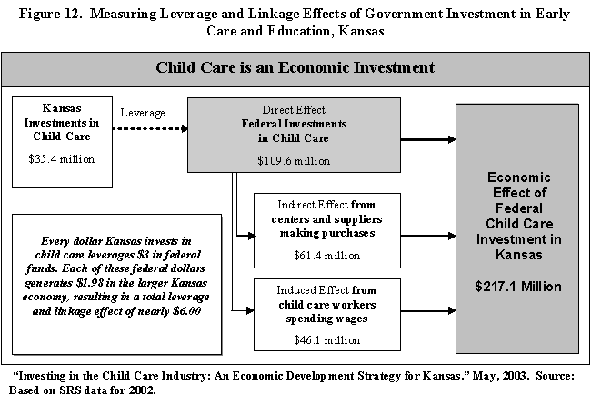
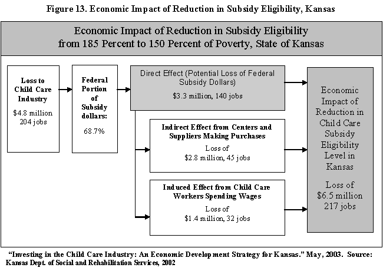
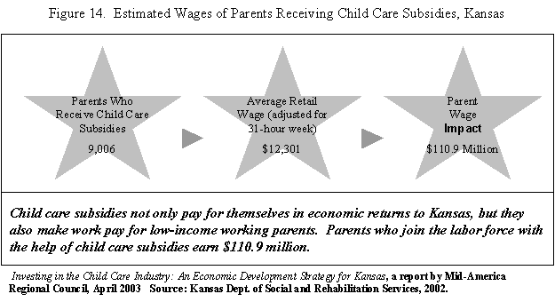
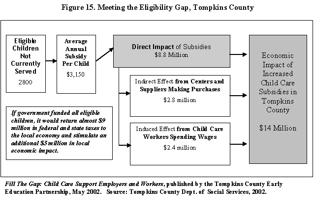

Government investment in early care and education has historically been viewed as welfare, and responses have largely focused on the poor. Even when an early education frame is used to drive funding, the strongest arguments are for boosting the early learning opportunities for disadvantaged children. When child care is viewed through the lens of economic development, however, the response need not be limited just to poor families, school districts or center-based care. The frame embraces the industry as a whole—all types of providers in all settings.
| An economic development framing encourages investment in child care as an industry that generates jobs, contributes to the economy through the purchase of goods and services, promotes child development and supports working families at all income levels. |
This section describes how regional economic analysis can be used to measure
the short-term regional economic effects of government investments in child care.1
First, we describe the different types of government investments and their role
in strengthening the market for child care. Then, we show how state and local dollars
spent on child care leverage federal funds that ripple (linkage effects) through
the economy in the same way as the dollars generated by exports.
Special attention is given to the role of child care subsidies as an economic development
investment that supports working parents and strengthens the regional economy. Government
investments in child care are more than education or welfare, they are a critical
component of the infrastructure for economic development.
Government investment in child care improves the quality of early education, assists in the regulation of the child care market, and ensures that quality child care is accessible to low-income working parents. There are four main types of government investment in child care: 1) government funded programs, 2) direct payments to providers to improve quality, 3) expenditures for licensing and regulation, and 4) subsidies to support working parents.
| Table 6. Kansas Child Care Funding | ||||
| Funding Source | Purpose | Kansas Funds | Federal Funds (Discretionary)* | Federal Funds (Designated)** |
|
Kansas General Revenue |
Subsidies |
$14,505,028 |
|
|
|
Kansas Tobacco Settlement Funds |
Subsidies |
$1,399,995 |
|
|
|
Smart Start - Quality |
$3,000,000 |
|
|
|
|
Federal Child Care Development Funds (CCDF) |
Subsidies |
|
|
$18,625,148 |
|
Licensing |
|
|
$2,197,856 |
|
|
Early Learning Quality Grants |
|
|
$4,066,111 |
|
|
Kansas Early Head Start (EHS) |
|
|
$7,973,754 |
|
|
Federal TANF Funds Transferred to CCDF |
Subsidies |
|
$15,796,597 |
|
|
Early Learning Quality Grants |
|
$210,292 |
|
|
|
Federal SSBG Funds |
Subsidies |
|
$488,435 |
|
|
Federal Food Stamp Education and Training |
Subsidies |
|
|
$396 |
|
Federal Early Head Start (EHS) Funds |
Early Head Start (EHS) |
|
|
$6,983,741 |
|
Federal Head Start (HS) Funds |
Head Start (HS) |
|
|
$43,517,705 |
|
Federal Child and Adult Care Food Program (CACFP) |
Food Subsidies to Child Care Programs |
|
|
***$26,289,249 |
|
Total Funding |
|
$18,905,023 |
$16,495,324 |
$109,653,960 |
|
“Investing in the Child Care Industry: An Economic Development
Strategy for Kansas.” May 2003. Source: Kansas Dept. of Social and Rehabilitation
Services, State Fiscal Year 2002.
* Federal funds that Kansas has the discretion to use for
early childhood care and education programs. |
||||
Table 6 shows the breakdown of government investments in child care in Kansas by source and purpose of investment.
Public Funding Sources and Leverage Worksheet (requires Microsoft Excel)
| Government investments strengthen the child care market and help sustain a critical social infrastructure for economic development. |
State and local investments leverage federal dollars by building the quality and licensing system that enables the state to draw down federal funding. Federal dollars represent the most important source of external demand for child care. Leverage is based not just on federal funds that require a state match but also state investments in the infrastructure (such as licensing and child care resource and referral services) necessary to draw down federal funds. The leverage figures do not imply that new state investments will result in more federal funds. Rather they show the current relationship between state and federal funds.2 Table 7 shows the method developed by the Kansas study team to determine how Kansas state funds leverage federal funds.
| Table 7. Estimating Leverage of State Funds to Federal Funds, Kansas | ||||||||
1. Kansas funding includes the following three categories (all
funds are SFY2002):
|
||||||||
2. Federal funding includes federal funds that could only be
used for early care and education services in Kansas (including Child Care Development
Funds, Food Stamp Employment and Training, Head Start, Early Head Start and
Child and Adult Care Food Program).
|
||||||||
| The Leverage of Federal Funds to Kansas Investment is the ratio $109,653,960 / $35,400,347 = 3.09754 | ||||||||
|
Every dollar Kansas invests in child care leverages $3 in federal funds. |
||||||||
| “Investing in the Child Care Industry: An
Economic Development Strategy for Kansas.” May 2003. Source: Kansas Dept. of
Social and Rehabilitation Services, State Fiscal Year 2000. Note: Had Kansas decided not to include TANF transfers in its “state” share the leverage would have been twice as high. |
A major source of growth in the regional economy is external demand. In the child care sector, where most of the demand is local (from households), federal investments represent the most important source of external demand. External demand spurs economic development by bringing in additional dollars to the state economy. We can use the Type II multipliers from the input-output analysis to determine the linkage effect of these federal dollars. Figure 12 from the Kansas report shows that each federal dollar generates a total linkage in the broader Kansas economy of $1.98, for a total impact of $217 million on the regional economy. This linkage effect, combined with the leverage effect, creates a combined impact of more than $6.00 for every dollar the state invests in the child care sector ($3,00 in leverage* $1.98 in linkage = $6.00).

Measuring leverage and linkage is most appropriate for new dollars or a shock to the child care market (such as a proposed budgetary reduction). Kansas, like many other states in 2003, was experiencing budget difficulties. Revenues were down and budget cuts were proposed in nearly all sectors of state and local government. One of the proposals in 2002 was to reduce the eligibility for child care subsidy from 185 to 150 percent of poverty. The study team used the regional economic analysis to demonstrate that child care subsidies are more than welfare, they are an economic development investment for the state of Kansas.
The Kansas study measured the effect on the state economy if the level of child care subsidy eligibility were reduced, which would have the “shock” effect of reducing the total demand for child care in the state.3 Figure 13 illustrates how the loss of federal funding from such a policy change would ripple through the state economy. A Type I multiplier could have been applied to the state portion of the subsidy funds, but to be conservative, only the federal (external) portion of the subsidy funds was analyzed. The Type II multiplier, which includes the direct, indirect, and induced effects, was multiplied by the federal portion of the subsidy funds.4

Quality child care is expensive from the perspective of parents – especially parents in low wage employment. Subsidies make it possible for low income working parents to afford the cost of quality child care. Parents who join the labor force or who are able to maintain stable employment with the help of child care subsidies contribute to local economic development through their earned income. All three Cornell studies (Tompkins County, Kansas and New York) emphasize the importance of publicly funded child care as a strategy that supports both employers and employees.
Child care subsidies to parents represent a vital support to promote business and
employment growth. According to the Child Care Bureau, 80 percent of all children
receiving subsidies were in paid care because of parent employment (ACF800, FY 2000).
A four state study found 65 - 80% of parents receiving subsidies work in either
retail trade or in services (Okuyama and Weber, 2001), so subsidies support these
growing sectors in particular. A recent study by the National Bureau of Economic
Research and Wellesley College showed that policies implemented in the State of
Rhode Island to expand child care subsidy eligibility and increase provider
reimbursement rates “significantly increased the probability that family heads of
households would leave welfare for work” (Witte, 2003). It also increased their
working hours from part-time to full-time.
In order to estimate the economic development effect of child care subsidies, researchers need to determine the number of parents receiving child care subsidies. This number must be estimated from child care subsidy data which is collected on the basis of family cases. The Child Care Bureau ACF-800 data provide the average number of families receiving subsidies monthly. Monthly averages are better than yearly totals because they don’t double count people who enter and leave the system multiple times in a year.
For the Tompkins County report, the Department of Social Services estimated that client families are typically single parents with at least two children, so a ratio of two children per parent was assumed. Thus, with 413 children enrolled, the number of parents receiving child care is about 206. The New York and Kansas teams worked closely with the state agencies that run the child care subsidy program to get an estimate of the number of parents and children served by subsidies.
Subsidy parent income can be estimated using the area’s average wages for low income families. Because the majority of parents receiving child care subsidies work in retail and non-professional services, the average annual wage for retail workers can be used to estimate parent wages. In Tompkins County, the majority of parents with subsidies do not work full-time hours, so the annual average retail wage of $16,755 was reduced by 25% to reflect a 30 hour workweek ($12,500). Kansas reviewed the actual distribution of earnings for parents receiving subsidies and found it roughly equaled the average retail wage for a 31-hour work week (see Figure 14). The New York report used the average wage of a low-wage worker (defined as a worker at the 20th percentile). Another option would be to use the income eligibility threshold for child care subsidies.

The wages earned by parents who receive child care subsidies also make an important contribution to the economy. Child care subsidies support low-income working parents and the businesses who employ these parents. The New York report demonstrated that between 1992 and 2000, nine of the top fifteen fastest growing industries in New York were in the service sector, many of them paying significantly less than the state’s average wage of $40,658. Growth in these service industries represented over 30% of the total state job growth (Fiscal Policy Institute, 2001).
Tight county budgets coupled with hiring freezes and staff reductions in the Department of Social Services made it difficult to reach out to eligible working parents in Tompkins County. Failure to utilize the county’s subsidy dollars had resulted in shrinkage in the county allocation from $1.8 million in 2000 to $1.4 million in 2002. The Department of Social Services was concerned because it was serving only 14 percent of the eligible children in the county (based on Child Health Insurance Program eligibility estimates). The Department wanted to increase the demand for subsidies so it could increase its allocation from the state. Local human resource managers were not initially aware of the income levels (under $32,000 a year for a family of four) that would make many of their employees eligible for subsidies. To reach out to working parents, a set of materials was developed by the Early Education Partnership on tax credits, FSAs, and public subsidies. By reaching parents through their employers rather than through the social service office, the Partnership could reduce the stigma of applying for public support, and businesses could extend the reach of social services staff to eligible working parents.

Using fiscal year 2002 data provided by the Department of Social Services, we estimated the number of eligible children not served by the subsidy program (2,800) and the average annual subsidy per child ($3,150). The Early Education Partnership used the Type II multiplier to measure the effect of fully funding the public subsidy program. Figure 15 shows the linkage effects of meeting the eligibility gap in Tompkins County.5 The Chamber of Commerce used the results to show that if government funded all eligible children, it would return almost $9 million in federal and state taxes to the local economy and stimulate an additional $5 million in local economic impact.
Public subsidies for child care provide a key support, not just for working families, but for the businesses that need to recruit and retain employees with young children. This chapter has shown how an economic development framing can be used to demonstrate that government investments in child care have short-term economic benefits that extend beyond the direct effects because the increased demand for child care in turn increases demand for other industries due to child care industry purchases. State investments leverage federal funds that increase final demand for quality child care. This benefits not only the child care sector itself, and the children and parents it serves, but also helps stimulate the broader regional economy.
1 Economic studies of tax and government expenditure generally find a positive impact of investment on economic development, while taxes have a limited negative effect (Bartik, 1991; Bingham and Bowen, 1994).
2 Without licensing, or some sort of state approval system, child care programs could not access federal Child and Adult Care Food Program (CACFP) dollars. Without recruiting, many providers would not know about the program or sign up. Similarly, funding for Head Start and Early Head Start is based on competitive bidding. In past competitions, Head Start and Early Head Start proposals were looked upon more favorably if they attracted funding from multiple sources to provide full-day, year-round services. To this end, the commitment of state funds to Early Head Start and Head Start, as well as a state’s willingness to make child care subsidy funds available to Head Start programs, helps make proposals more attractive to the federal administration.
3 The direct effect of the reduction in eligibility level was based on Kansas Dept. of Social and Rehabilitation Services data. $4.8 million = the number of working parents who would lose subsidies (1043 parents with 1,518 children in child care) times the average subsidy per child ($3,146). 204 jobs = the average ratio of child care teachers to children 7.4 * 1,518 children. Federal funds comprise 68.7% of subsidy funding so the direct loss was reduced to 68.7% of the total.
4 The output direct effect = 1, indirect effect = 0.56, and induced effect = 0.42 for total Type II output multiplier = 1.98. The employment direct effect = 1, indirect effect = 0.32, and induced effect = 0.23 for total Type II employment multiplier = 1.55.
5 Because both state and federal portions of subsidy funds represent external demand to the county economy, a Type II multiplier was used.